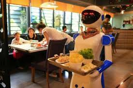
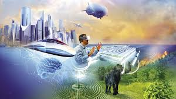

Robot food delivery is a modern technology that uses smart robots to bring food to people quickly and safely. These robots can travel on roads orbr inside restaurants using sensors and cameras to avoid obstacles. They are controlled by computers or mobile apps and deliver food directly to customers’ doors. This system helps reduce human effort, saves time, and works 24/7 without breaks. In the future, robot food delivery will become common in smart cities, making food delivery faster, safer, and more efficient.

By the year 2030, Pondicherry is expected to become one of the most advanced and eco-friendly cities in India. The government and local people are working together to make the city cleaner, greener, and smarter. Roads are well-developed, and electric vehicles reduce pollution. Modern technology helps manage traffic, waste, and water systems efficiently. Tourism has grown even more, with new hotels, cultural centers, and digital guides that share Pondicherry’s rich French and Indian heritage. Auroville continues to inspire the world with its sustainable living practices. The beautiful beaches are cleaner, and the city maintains a perfect balance between modern development and natural beauty.